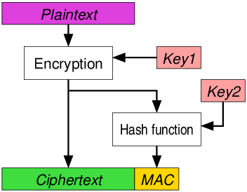

Information Security
(Press ? for help, n and p for next and previous slide; usage hints)
Introduction
Core Questions
- What security risks do we face?
- What are CIA triad for information security?
- How to establish a secure communication with pre-shared key?
- How to share a secret via public channels?
- How is the security of Cyber-Physical System different from that of a pure cyber system?
Learning Objectives
- Understand the key information security properties
- Confidentiality
- Integrity
- Availability
- Explain the purpose of different cryptography algorithms
- Symmetric Encryption
- Cryptographic Hash
- Diffie-Hellman Key Exchange
- Asymmetric Encryption & Digital Signature
- Understand the security challenges presented in CPS
Table of Contents
Information Security
Why Security?
- The next generation of intelligent networked systems: Smart Grids, Smart Buildings, Internet of Things, will make extensive use of widespread sensing and networking.
- As the systems become “smarter”, they are also more vulnerable to malicious attacks.


The First Cyber-physical system Malware: Stockist
- Stuxnet is the first discovered malware that spies on and subverts industrial control systems. It was discovered in June 2010.

Stuxnet Incident

Threats to Industrial Control Systems
In FY 2016, ICS-CERT received 290 incidents. The scope of incidents includes:

- Unauthorized access,
- Exploitation of zero-day vulnerabilities,
- Malware infections within air-gapped control system networks.

Attacks on Critical Infrastructure
A Successful attack on critical infrastructure can be devastating.

- Vitek Boden
- Took control of municipal water system
- Dumped ~1 million liters of raw sewage into local waterways and parks
- Arrested in Queensland, Australia on April 23, 2000
Attack Through Supply Chain
- 70% of the components for Boeing 787 are manufactured by other suppliers [Tang2009]
Supply Chain for Boeing 787
Key Information Security Concepts
The CIA triad
- Confidentiality
- Information is not made available or disclosed to unauthorized individuals, entities, or processes.
- Integrity
- Data cannot be modified in an unauthorized or undetected manner.
- Availability
- Information must be available when it is needed.
- Information need to be stored, processed, and communicated in a timely manner.
Case Study of Smart Grid
- A case study for smart grid [Mo2011]
| Control Signal | Measurements | Software | |
| Confidentiality | Exposure of System Structure | Unauthorized Access | Piracy |
| Integrity | Changes of Control Command | Incorrect Data | Malicious Software |
| Availability | Inability to Control the Grid | Unavailability of Measurements | N/A |
Other Considerations
- Non-Repudiation
- One party of a transaction cannot deny having received a transaction;
- Nor can the other party deny having sent a transaction
- Legal implications
- Digital Signature can be used to enforce non-repudiation
- Privacy
- Wikipedia: Privacy is the ability of an individual or group to seclude themselves or information about themselves, and thereby express themselves selectively.
- Not to be confused with confidentiality
- Confidentiality: information is not disclosed to unauthorized users
- Privacy: authorized users CANNOT infer private information from available data
- Utility v.s. Privacy
Security Risks for Endpoints
Passive Information Gathering
- Someone pulls up with a receiver and sniffs the packets being sent on the network
- Same method used to sniff unencrypted WiFi traffic
- When sending un-important information, not a large threat
Traffic Analysis: Side-Channel Attack
- Examine cause and effect of encrypted packet
- E.g. Each time an xyz packet is sent, that valve opens
- We do not need to know what xyz is, only what it does
- Semantic security
Subversion of a Node
- Someone “captures” and “interrogates” the node to determine cryptographic information
- Sensor functionality may be compromised by attacker
Fake Node
- WSNs are self-arranging / self-configuring
- Intruder adds a node to the system
- Node may block passage of real data or transmit false data
- “Sybil” Attack
- A single node presents multiple ID’s to other nodes
- Affects geographic routing, distributed storage, multi-path routing, topology maintenance
- How do we tell if a node is “real?”
Message Corruption
- Attacks integrity of message
- Intruder inserts itself between source and destination to modify contents of the message
- Use fake/false node?
Node Malfunction and Outage
- Node may malfunction and generate inaccurate data
- Node may forward packets incorrectly
- How to detect and remove these nodes?
- Node outage: node just stops working altogether
- alternative route
- observability/controllability of the system?
- how much redundancy is needed where?
Denial of Service (“DOS” attack)
- Jamming the radio link
- Exhaust resources
- Re-route data
- Various kinds:
- Black Hole
- Node refuses to forward any packets it receives
- Sink-holes
- Induced Routing Loops
- HELLO Flooding
- Black Hole
Symmetric Encryption
Cryptography Basics
Basic Elements
- Plaintext: original message with no transformation
- Ciphertext: plaintext message after modification to obscure it from normal usage and readability
- encryption converts plaintext into ciphertext
- decryption converts ciphertext into plaintext
- Cryptographic algorithm: mathematical operation used to convert plain text into ciphertext
- Key:
- secret key used to encrypt or decrypt the message
Breaking a Cryptographic Algorithm
- Crypto-analysis:
- Identify patterns based on plaintext to re-generate key
- Ciphertext only Attack
- Known Plaintext Attack
- Chosen Plaintext Attack
- Chosen Ciphertext Attack
- Good algorithms generate noisy ciphertext with no discernible patterns
- Identify patterns based on plaintext to re-generate key
- Brute-force guessing:
- Keys longer than 128-bits (\(10^{38}\) possibilities) are generally considered to be acceptable
- Higher the key width, safer is the encryption
Brief History of Cryptography
Antiquity
1500 BC: clay tablets from Mesopotamia

“Scytale used by Spartans” by Luringen under GNU Free Document; from Wikipedia
- encrypt a craftsman’s recipe for pottery glaze
- 600~500 BC: Hebrew uses Atbash ciphers
- Bible: “The king of Sheshach shall drink after them” – Sheshach meaning Babylon

| Plain | A | B | C |
| Cipher | Z | Y | X |
- 400 BC~200 AD: “Mlecchita vikalpa” was documented in the Kama Sutra for the purpose of communication between lovers.
- Scytale transposition cipher was used by the Spartan military
- Caesar cipher and its variations used by Julius Caesar:
- Left shift by 3
- His nephew, Augustus, uses a similar system of right shift by 1
Frequency Analysis
For a simple substitution cipher, there are \(26!\approx 4\times 10^26\) possible keys
“The first page of al-Kindi's manuscript 'On Deciphering Cryptographic Messages'” by sador under Public Domain; from Wikipedia
- Roughly equivalent to 88 bit keys
- In comparison, the DES algorithm proposed in 1975 only has 56-bit key.
- However, substitution cipher are vulnerable to Frequency Analysis
- First proposed by 9th century by Al-Kindi, an Arab polymath
Appeared in Sherlock Holmes story
The Dancing Men
by unknown under Public Domain; from Wikipedia
- Possible solutions:
- map most common letters to multiple letters
- map a pair of letters or triplet of letters
- change the substitution rules for every letter
Frequency of English Letters

Kerckhoffs’ Principle
- First formulated in 1883 by Auguste Kerckhoffs, in a journal article on La Cryptographie Militaire
A cryptosystem should be secure even if everything about the system, except the key, is public knowledge.
- Shannon’s Maxim: “the enemy knows the system”.
- The “wrong” approach to security is called “security by obscurity”:
- Used by CSS encryption on DVD
- compromised in 3 years
Zimmermann Telegram
A secret diplomatic communication issued in January 1917 from German Foreign Office
- proposed a military alliance between Germany and Mexico.
- Mexico would recover Texas, Arizona, and New Mexico, if the United States enter war with German
- Intercepted and decoded by British intelligence.
- Pushed the United States to join WWI.
- One of the earliest occasions where a piece of signal intelligence influenced world events.
Enigma Machine
The Enigma machine is an encryption device employed extensively by Nazi Germany during World War II
“The Enigma Machine” by Alessandro Nassiri under CC BY-SA 4.0; from Wikipedia
- The machine contains a set of rotors:
- The rotors provide a simple substitution cipher
- However, after encrypting each letter, the rotors advance positions, changing the substitution
- The substitution rule changes with every keypress.
- The military Enigma has 158,962,555,217,826,360,000 different settings (or about 67 bits).
- The breaking of Enigma have been “decisive” to Allied victory
- The story is told in the movie “The Imitation Game”
Symmetric Encryption
Data Encryption Standard
Developed by IBM in 1970s and became a standard in 1977
“Diagram of DES” by Matt Crypto under Public Domain; from Wikipedia
- The size of the key is 56 bits, and 8 bits for parity check
- Block cipher: Encrypt 64 bits of plaintext into 64 bits of ciphertext
- First broke in 1997
A brute-force attack using Nvidia GTX 1080 would require 15 days on average
Advanced Encryption Standard
- AES is established by the U.S. National Institute of Standards and Technology (NIST) in 2001 as a successor to DES
- Has a block size of 128 bits
- Support three different key lengths: 128, 192 and 256 bits.
- At present, no known practical attack
- One of the symmetric encryption schemes used by TLS.
One-time-pad
In OTP, a plaintext is paired with a random secret key (also referred to as a one-time pad).
“One Time Pad used by NSA” by NSA under Public Domain; from Wikipedia
- Each bit or character of the plaintext is encrypted by combining it with the corresponding bit or character from the pad using modular addition.
- The resulting ciphertext will be impossible to decrypt if:
- The key must be truly random.
- The key must be at least as long as the plaintext.
- The key must never be reused in whole or in part.
- The key must be kept completely secret.
Authenticated Encryption
Cryptographic Hash Functions
- A function H that takes an arbitrary size input \(m\)
- and produces a fixed length output H(m).
- The output length is typically 128–1024 bits.
- A Hash be viewed as the finger print of the original message
- Hard to find 2 people with same fingerprint
- Given a person, it’s easy to get his/her fingerprint
- However given a fingerprint, it’s hard to find the person it came from
- Similarly
- Hard to find two message with the same hash (collision resistance)
- one-way
Strong and Weak Collision Resistance
- The once popular MD5 hash has a digest size of 128 bits.
- We want to find an input corresponding to a specific hash by brute force
- We need to do \(2^{128}\) search on average
- However, how much search we need to do if we want to find 2 inputs sharing the same hash by brute force?
- Surprisingly, only \(2^{64}\) search is needed due to birthday paradox!
Birthday paradox
- How likely this class of 30 students to contain two people with the same birthday?
- The answer is roughly 71%!
- The probability of NOT having two person with the same birthday (assuming no leap year) is
\[P=\left(1-\frac{0}{365}\right) \left(1-\frac{1}{365}\right)\dots\left(1-\frac{n-1}{365}\right)\]
- Notice that \(1-x \approx \exp(-x)\)
\[P\approx\exp\left(-\frac{\sum_{i=0}^{n-1}i}{365}\right)=\exp\left(-\frac{n(n-1)}{730}\right).\]
MD5 and SHA-1
MD5 was invented in 1991

- Digest size is 128 bits
- The strong collision resistance of MD5 was broken by Wang Xiaoyun in 2004.
- Now possible to find collisions in mere seconds.
- SHA-1 was released by the NSA in 1995
- Digest size is 160 bits
- Best attack, also from Prof. Wang, on SHA-1 requires \(2^{63}\) search.
- Google has removed SHA-1 support in Chrome

Hash-based Message Authentication Code
- Hashing the pre-shared secret (key) with the message
\[HMAC(k,m)=H\left((k\oplus opad)\|H((k\oplus ipad)\|m)\right).\]
- opad is the block-sized outer padding, consisting of repeated bytes valued 0x5c
- ipad is the block-sized inner padding, consisting of repeated bytes valued 0x36
The receiver of the MAC can verify if the correct pre-share secret is used
Authenticated Encryption
- Authenticated encryption simultaneously assures the confidentiality and authenticity of data.
- Encryption
- Message Authentication Code
- Approaches:
- Encrypt-then-MAC
- Encrypt-and-MAC
MAC-then-Encrypt



Key Management for Wireless Networks
Overview
- The goal is to establish secure communication between endpoints in a wireless network.
- Possible schemes using symmetric keys:
- Single Network-wide key
- Pair-wise Keys
- Bootstrapping off of Trusted Base-station
- Random Key Pre-distribution
- Alternatively, one could use asymmetric cryptography, which will be discussed later
Single Network-wide Key
- Using a Single Network-wide Key
- Simple technique
- Pre-load onto all nodes prior to deployment
- After deployment, establish communication with neighbors
- Authenticated encryption using the shared key
Pros and Cons
Pros:
- Simple
- Minimal storage required
- Resistant against DoS and packet injection
- Provided adversary doesn’t know the key with communication
- Replay can be avoided by sending source, destination, and timestamp
Cons:
- If single node is compromised, security is lost
- Impractical unless:
- Nodes are tamper-resistant
- No new nodes are ever added after deployment
Using Pair-wise Keys
- Every node shares a unique symmetric key with every other node on the network
- After deployment, nodes must perform key discovery to verify the identification of neighbors
Pros and Cons
Pros:
- Perfect resilience against node capture
- Revocation of compromised keys
- Uses only symmetric cryptography
- Allows for cheaper nodes
- Less susceptible to DoS
Cons:
- Poor scalability
- With an 80-bit key, a 100- node network requires 1KB storage on each node
- Memory limitations make large networks infeasible
Bootstrapping Security from Trusted Base Station
- Prior to deployment, symmetric key generated for each node and stored
- in order to communicate with the base station
- Nodes authenticate to base station using secret master key
- Base station generates link key for two nodes to communicate
Pros and Cons
Pros:
- Small memory requirement
- Perfect resilience to node capture
- Revocation of nodes is simple
- Node replication is easily controlled
- All key establishment goes through base station. If the number of links of any node is too high, station can refuse to generate new link keys for the node
Cons:
- Not scalable
- High communication overhead
- All key establishment goes through base-station, which in large networks may be many hops away
- Base station becomes target for compromise
- Single point of failure
Random Key Pre-distribution
- Random set of keys, \(S\), chosen. For each node, \(m\) keys are selected and stored in memory (key ring)
- Size of \(S\), \(|S|\), chosen such that any two random subsets of size \(m\) will share at least one key with a probability of \(p\) Key Setup
- Nodes perform key discovery to determine neighbors with shared key Forms connected graph of secure links
- Nodes can set up path keys with neighboring nodes that lack a shared key
- Erdos–Renyi graph: Consider a graph with \(n\) vertices and each pair of vertices is connected independently with probability \(p\), then
- If \(p < (1- \epsilon)\log n/n\), then the graph contains isolated vertices a.s.
- If \(p > (1+ \epsilon)\log n/n\), then the graph is connected a.s.
Asymmetric Keys
- Prior to deployment, master public/private key-pair generated.
- For every Node A, a public/private key-pair is generated and stored along with master key’s signature on \(K_A\).
- Nodes perform key exchange. Once public key is verified, a symmetric link key is generated to be used as session key
- e.g., using Diffie-Hellman
Pros and Cons
Pros:
- Resilient against node capture
- Nodes have no knowledge of other secret link keys
- Revocation possible
- Broadcast of revoked key-pair signed by master will result in revocation
- Scalable
- Scheme retains effectiveness regardless of number of nodes
Cons:
- Dependence on asymmetric key cryptographic hardware or software
- Computationally intensive
- Nodes may lack integer multiplication unit
- Vulnerability to DoS
- Digital signature verification is resource-consuming
- Floods of illegal signatures can drain batteries
- No resistance to node replication
- By capturing one node, links can be set up with all other nodes, creating “omnipresence”
Modular Arithmetic
Congruence
- Given an integer \(n > 1\), called a modulus, two integers are said to be congruent modulo \(n\), if there is an integer \(k\) such that
\[a − b = kn.\]
- We write \(a \equiv b (mod\;n)\).
- One can verify that congruence is an equivalent relationship.
- Symmetric
- Reflexive
- Transitive
Modular Arithmetic: Addition and Multiplication
- Addition and multiplication have the same properties as addition and multiplication on real numbers:
- Associative
- Commutative
- Distributive
- Subtraction is trivial:
- \(a + b \equiv c\; (mod\;n)\Rightarrow b\equiv c+(n-a)\;(mod\;n).\)
Modular Arithmetic: Inverse and Division
- If \(a\) and \(n\) are coprime, then \(gcd(a,n)=1\).
- Notice that the gcd can be computed via Euclidean Division.
- There exists integer \(x,\,y\) such that
\[xa+yn=1.\]
- or \(xa \equiv 1\; (mod\;n)\).
- \(a b \equiv c\; (mod\;n)\Rightarrow b\equiv cx\;(mod\;n).\)
Modular Arithmetic: Power and Logarithm
- How to compute \(c \equiv a^b\; (mod\;n)\)?
- Can be done in roughly \(O(\log b)\) multiplications.
- On the other hand, there is no known fast algorithm to solve the discrete logarithm problem.
- Finding \(b = \log_a c\) is hard!
- However, efficient algorithms for quantum computer exists
Euler’s Theorem
- Consider the set of numbers that are
- less than n;
- and coprime to n.
- Important observation:
- If \(a\) and \(b\) are coprime to \(n\), then \(ab\) is coprime to \(n\).
- If \(a\) is coprime to \(n\), then we can find \(a^{-1}\) coprime to \(n\).
- In other words, such set is an Abelian group under modulo multiplication.
- Euler’s Totient Function \(\phi(n)\): size of such set
- For example: \(\phi(6) = |\{1,5\}| = 2.\)
- If \(p\) and \(q\) are prime, then
- \(\phi(pq) = pq - p - q +1.\)
- Computing \(\phi(pq)\) is the same as factorizing \(pq\).
- No know fast factorization algorithm exists
- However, efficient quantum algorithm exists
Euler’s Theorem
- Euler’s Theorem: If \(a\) and \(n\) are coprime, then
\[a^{\phi(n)}\equiv 1\; (mod\;n).\]
- If \(ed \equiv 1\; (mod\;\phi(n))\), and \(a\) is coprime to \(n\) then \[a^{ed} \equiv a^{k\phi(n)}\times a\equiv a; (mod\;n).\]
- The \(e\)th-root of \(a\) is \(a^d\), or vice versa.
- If we know \(\phi(n)\), then we can easily generate compute \(d\)
- However, computing \(d\) without knowing \(\phi(n)\) is considered to be difficult
Diffie-Hellman Key Exchange
Diffie-Hellman Key Exchange
Named after Whitfield Diffie and Martin Hellman.

“Whitfield Diffie” by DuncanHull under CC BY-SA 4.0; from Wikipedia
- First published in 1976
The first public key exchange algorithm

“Martin Edward Hellman” by Ajvol under CC BY-SA 3.0; from Wikipedia
- Both received Turing Award in 2015


DH Protocol
| Alice | Public Information | Bob |
| \(p, g , a\) | ||
| \(p, g , g^a(mod\;p)\) | ||
| \(p, g , g^a(mod\;p),b\) | ||
| \(p, g , g^a(mod\;p),g^b(mod\;p)\) | ||
| \(p, g , a, g^b(mod\;p)\) |
- The secret is generated as
\[s \equiv g^{ab} \equiv (g^a)^b \equiv (g^b)^a \;(mod\;p).\]
- However, the ones passively observing the public channel only have \(g^a(mod\;p),\,g^b(mod\;p)\)
- \(a,b\) cannot be deduced since discrete logarithm is hard
- No fast algorithm known to compute the secret
Man-in-the-Middle Attack
| Alice | Eve | Bob |
| \(p, g , a\) | ||
| \(p, g , g^a(mod\;p), \alpha, \beta\) | ||
| \(p, g , g^\alpha(mod\;p),b\) | ||
| \(p, g , g^a(mod\;p),g^b(mod\;p),\alpha,\beta\) | ||
| \(p, g , a, g^\beta(mod\;p)\) |
- Eve replace \(g^a(mod\;p)\) from Alice by \(g^\alpha(mod\;p)\);
- and replace \(g^b(mod\;p)\) from Bob by \(g^\beta(mod\;p)\)
Man-in-the-Middle Attack
- Alice will compute the secret as \[s_a \equiv g^{a\beta}\;(mod\;p).\]
- Bob will compute the secret as \[s_b \equiv g^{\alpha b}\;(mod\;p).\]
- Both can be computed by Eve
- To avoid man in the middle attack, Alice and Bob need to verify that \(g^a(mod\;p)\) and \(g^b(mod\;p)\) come from the correct user.
Asymmetric Encryption
RSA
- Named after Ron Rivest, Adi Shamir, and Leonard Adleman
- First published in 1977
- The first public key algorithm
All received Turing Award in 2002


RSA
- If Alice know two large prime \(p\) and \(q\), then
- she can compute \(\phi(pq) = pq-p-q+1\)
- and generate \(e\) and \(d\), such that \(ed\equiv 1 \;(mod\;\phi(pq))\)
- \(pq, e\) is the public key
- \(d\) is the private key for Alice
- By Euler’s theorem, given \(a^e\;(mod\;pq)\), Alice can find \(a\) by \[a \equiv (a^e)^d \;(mod\;pq).\]
- This holds true even if \(a\) is not coprime to \(pq\), which is highly unlikely
- Need to leverage Chinese remainder theorem
- However, this is very difficult for others who do not know \(d\)
Digital Signature
- By Euler’s theorem, given \(a^d\;(mod\;pq)\), any one can compute \(a\) by \[a \equiv (a^d)^e \;(mod\;pq).\]
- \(e\) is publicly known
- Now Alice can send the message \((a, a^d\;(mod\;pq))\)
- It proves that the sender knows \(d\);
- without the sender actually revealing \(d\)!
- hence the sender is Alice;
- and \(a\) is sent by her.
- Digital signature also provide non-repudiation
- Usually combined with hash function
Public Key Infrastructure
- A PKI is an arrangement that binds public keys with respective identities of entities (like people and organizations).
- A certificate authority (CA) that stores, issues and signs the digital certificates
- done via the CA’s own private key
- the trust in the user key relies on one’s trust in the CA’s key.
- Alternatively one could adopt a decentralized approach:
- Web of trust: can you trust your friend’s friend?
- Blockchain PKI?
Transport Layer Security
Overview
- Transport Layer Security and predecessor, Secure Sockets Layer are designed to provide secure communications over a computer network.
- Confidentiality
- Integrity
- The identity of the server (or both parties) is authenticated using public-key cryptography.
| Protocol | Published | Status |
| SSL 1.0 | Unpublished | Unpublished |
| SSL 2.0 | 1995 | Deprecated in 2011 |
| SSL 3.0 | 1996 | Deprecated in 2015 |
| TLS 1.0 | 1999 | Deprecated in 2020 |
| TLS 1.1 | 2006 | Deprecated in 2020 |
| TLS 1.2 | 2008 | |
| TLS 1.3 | 2018 |
TLS 1.2 with DH Key Exchange
In TLS encryption, the process is as follows:
- The client opens a connection to a TLS-capable server (port 443 for HTTPS)
- Client:
- the TLS version and cipher suit supported
- a client random
- Server:
- selected cipher suit and TLS version
- certificate
- sign on the client random and DH parameter with server’s private key
- Client:
- confirms the validity of the certificate and server’s signature
- sends DH parameter
- A session key is generated by DH key exchange
- Handshake is finished, secure communication is established with the session key
Security of Cyber-Physical System
Overview
Differences between Information Security and CPS Security
- Physics!
- Systems cannot be stopped easily
- Attacks from the physical world
- High reliability requirement
- Performance guarantees in the presence of attack
- Graceful performance degradation
- Legacy software, firmware and hardware
- Cost of security?
- Physics is also difficult for the adversary to mimic
- enables intrusion detection
Countermeasures: Defense in Depth
Defense in Depth

- Prevention
- Using cryptography/coding to preserve confidentiality (privacy)
- Detection
- Fault Detection and Isolation (FDI)
- Active Detection
- Resiliency
- Off-line: Resilient system design
- On-line: Secure information fusion, control
- Recovery
- Software rejuvenation
- Patching
- …
- Prevention

{kind=link}
{kind=link}
{kind=link}
{kind=link}
{kind=link}
{kind=link}
{kind=link}
{kind=link}
{kind=link}
{kind=link}
{kind=link}
Physical Watermarking
Stuxnet
- NY times: The worm itself now appears to have included two major components. One was designed to send Iran’s nuclear centrifuges spinning wildly out of control. Another seems right out of the movies: The computer program also secretly recorded what normal operations at the nuclear plant looked like, then played those readings back to plant operators, like a pre-recorded security tape in a bank heist, so that it would appear that everything was operating normally while the centrifuges were actually tearing themselves apart.
System Description
- Assumptions: Linear Gaussian systems, Linear state estimator+state feedback, \(\chi_2\) failure detector.
Active Detection via Physical Watermarking
- Change the control law by adding a zero mean i.i.d. Gaussian watermarking signal \(\zeta(k)\):
\[ u(k) = \text{Optimal LQG Control}+ \zeta(k).\]
Watermark
Simulation: Tennessee Eastman Process
- The TEP is a realistic industrial model for process control.
TEP Model
- The simplified model contain 4 inputs, 4 outputs and 7 internal states.
Detection Performance
- Physical watermarks enable replay attack detection.
- The optimal watermark signal and detector can be learned using data-driven approach.
Information Fusion
Static State Estimation
- Sensor model:
\[\begin{bmatrix} y_1\\ \vdots\\ y_m \end{bmatrix} = Hx + noise + attack. \]
- The noise is small (zero mean Gaussian or bounded) but ubiquitous.
- The attack is \(p\)-sparse but can be arbitrarily large.
- Originally proposed by Peng et al.[Liu2011] in the context of DC power flow model.
Fundamental Limit for Noiseless Case
- The system is called \(p\)-observable if \(H\) is full column rank even after removing rows corresponding to an arbitrary set of \(p\) sensors.
- The system is NOT \(p\)-observable \(\Rightarrow\) There exists undetectable attack.
- The system is NOT \(2p\)-observable \(\Rightarrow\) There exists unidentifiable attack.
- The system is NOT \(2p\)-observable \(\Rightarrow\) One cannot “securely” estimate the state with bounded error.
- The “secure” estimation problem is NP-hard in general [Hendrickx2014], [Mao2019]
Secure Static Estimator
- Estimator with Combinatorial Complexity [Fawzi2014], [Ren2020], e.g.,
\[ \begin{align*} & \mathop{\textit{minimize}}\limits_{\hat x,a,w}& & \|w\|^2 \\ &\text{subject to}& &y = H \hat x + w + a,\\ && &\|a\|_0\leq p. \end{align*}\]
- Require \(2p\)-observable to be “secure”
- Achieves fundamental limit
- Convex optimization based estimator [Han2019]
\[\hat x = \mathop{argmin}_{\hat x} f_i (y_i - H_i\hat x)\]
- Require stronger condition than \(2p\)-observable to generate “secure” estimate.
Simulation: IEEE 14-Bus System
- The system has 27 sensors and 13 states

IEEE 14-Bus System
- The power flow meter on the red line is being attacked
Stuxnet Incident
- With fine-tuned parameters, we can design a “good” estimator both in the absence and in the presence of attacks.
Bibliography
- [Fawzi2014] Fawzi, Tabuada & Diggavi, Secure Estimation and Control for Cyber-Physical Systems Under Adversarial Attacks, IEEE Trans. Automat. Contr. 59(6), 1454-1467 (2014). http://ieeexplore.ieee.org/lpdocs/epic03/wrapper.htm?arnumber=6727407
- [Han2019] Han, Mo & Xie, Convex Optimization Based State Estimation Against Sparse Integrity Attacks, IEEE Trans. Automat. Contr. 64(6), 2383-2395 (2019).
- [Hendrickx2014] Hendrickx, Johansson, Jungers, Sandberg & Sou, Efficient Computations of a Security Index for False Data Attacks in Power Networks, IEEE Trans. Automat. Contr. 59(12), 3194-3208 (2014). http://ieeexplore.ieee.org/lpdocs/epic03/wrapper.htm?arnumber=6882830
- [Liu2011] Liu, Ning & Reiter, False data injection attacks against state estimation in electric power grids, ACM Trans. Inf. Syst. Secur. 14(1), 1-33 (2011). http://dl.acm.org/citation.cfm?id=1952982.1952995
- [Liu2020] Liu, Mo, Yan, Xie & Johansson, An Online Approach to Physical Watermark Design, IEEE Trans. Automat. Contr. , 1-1 (2020).
- [Mao2019] Mao, Mitra, Sundaram & Tabuada, When is the Secure State-Reconstruction Problem Hard, in: Proc. IEEE Conf. Decis. Control, 2019.
- [Mo2011] Mo, Kim, Brancik, Dickinson, Lee, Perrig & Sinopoli, Cyber – Physical Security of a Smart Grid Infrastructure, Proc. IEEE 100(1), 1-15 (2011). http://dx.doi.org/10.1109/JPROC.2011.2161428
- [Mo2014] Mo, Chabukswar & Sinopoli, Detecting Integrity Attacks on SCADA Systems, IEEE Trans. Control Syst. Technol. 22(4), 1396-1407 (2014). http://ieeexplore.ieee.org/articleDetails.jsp?arnumber=6612700
- [Ren2020] Ren, Mo, Chen & Johansson, Secure State Estimation with Byzantine Sensors: A Probabilistic Approach, IEEE Trans. Automat. Contr. , 1-1 (2020).
- [Tang2009] Tang, Zimmerman & Nelson, Managing New Product Development and Supply Chain Risks: The Boeing 787 Case, Supply Chain Forum An Int. J. 10(2), 74-86 (2009). https://doi.org/10.1080/16258312.2009.11517219